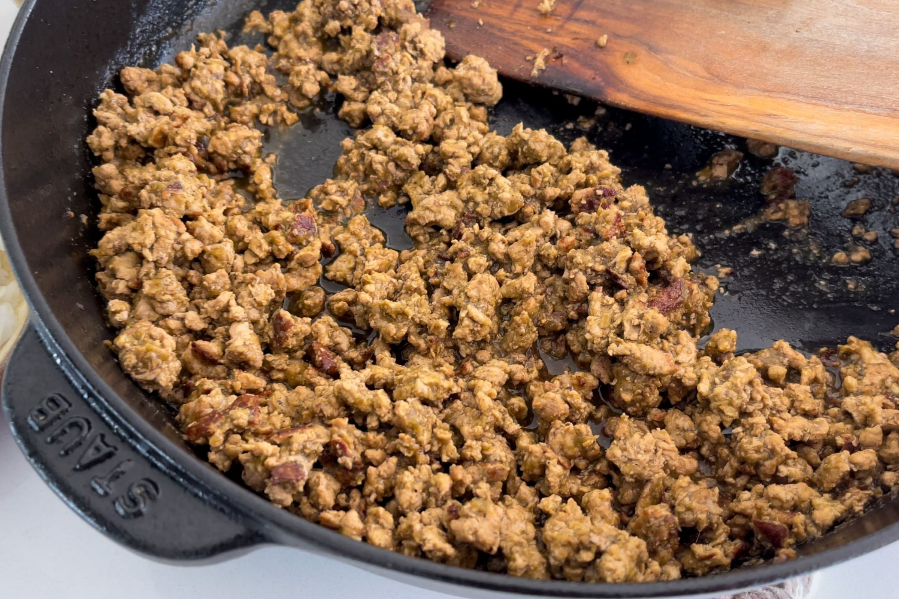
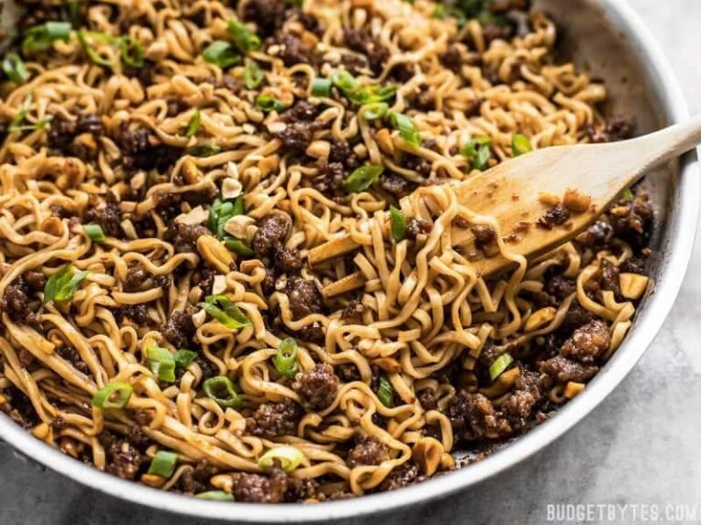
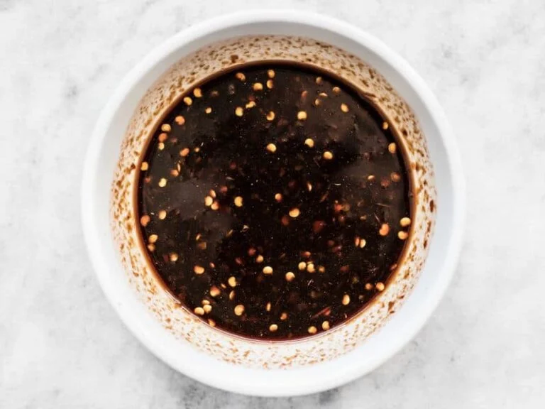
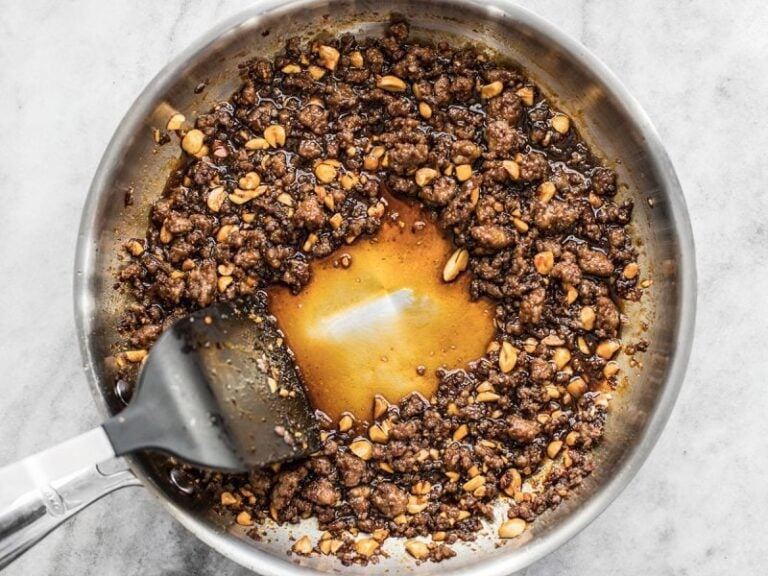

Dead Simple Fried Rice
Origin: American/East Asian
Source: Self
Category: Main Dish

This Dead Simple Fried Rice recipe is an incredibly modular and tasty dish. At its core, it's just rice, vegetables, protein, and oil. As such, the dish can be modified to serve as many or as few people as needed with a wide variety of food preferences. Experimentation with what specific ingredients you enjoy the most will unlock the full potential of this dish.
Recipe Ingredients
- Long-grain white rice
- Frozen Vegetables
- Eggs
- (optional) Milk
- Oil of Choice
- Salt
- Soy Sauce
- (optional) Additional Sauce
- Curry Sauce/Paste, Spicy Teriyaki Sauce, and Sweet Chili Sauce are great options
- (optional) Additional Pre-cooked/Fast-cooking Protein of Choice
- Nuts, sausage, tofu, and bacon are great options
- (optional) Additional Fresh Vegetables
- Green onions, celery, and vidalia onions add great texture and flavor to the dish.
Recipe Steps
- In a rice cooker, add half a cup of rice, a cup of water, a touch of oil, and a pinch of salt. Cook the rice. Tip: if there are tough frozen veggies, such as broccoli, you might want to add the frozen veggies to the integrated steamer basket.
- On high medium heat on your stovetop, in a frying pan, add your chosen oil. Add some milk if desired. Then, scramble the eggs.
- Before the eggs are fully done, add the frozen vegetables. Add fresh vegetables when required so they are fully cooked by the end.
- (Optional) Add the additional protein when required so they are fully cooked by the end.
- Once the rice is done, add it to the pan. Poor your desired amount of Soy Sauce. Stir well.
- (Optional) After that, add your desired amount of additional sauce. Stir well.
- Let the fried rice cook until it is no longer visibly oily and the dish is nice and hot, with the vegetables fully cooked.
- Plate the fried rice. Enjoy!
Additional Images


Mapo Tofu
Origin: Chinese
Source: Own Recipe
Category: Main Dish
{kind=link}
Need something smooth and spicy? Mapo Tofu is a simple tofu dish from Sichuan China. It's great over rice and easy to prep/save for college students! This recipe is for people who want to try authentic Chinese food but do not have Sichuan spices to use.
Ingredients
- 1 pack silken tofu
- 2 green onions, thinly sliced
- 1/2 lb ground pork
- 1 pack mapo tofu sauce (store bought)
- 3 cloves minced garlic
- soy sauce to taste
- 2 tbsp cooking oil
Steps
- Brown pork in wok with oil for 4-5 minutes
- Add sauce and garlic, stir fry for 2 minutes
- Add tofu and mix lightly as to not break up the tofu too much, until heated through
- Add soy sauce, green onion and dish up
Additional Images

Pesto Pasta
Origin: Italian
Source: Simply Recipes
Category: Main Dish
Pesto pasta has always been a comfort dish for me; it’s quick, it’s easy, and great food for a dinner party or a comfy night in! It requires six main ingredients, plus additional spices as you see fit. If you’re not in the mood for pasta, you can always eat the pesto sauce on bread, crackers, or eggs! This recipe makes enough for around 4 people, so adjust accordingly.
Ingredients
- 2 cups fresh basil leaves, packed (can add some spinach if you don't have enough basil leaves)
- 3/4 cup freshly grated Parmesan or Romano cheese
- 1/2 cup extra virgin olive oil
- 1/3 cup pine nuts (can sub with same amount of chopped walnuts)
- 3 cloves garlic, minced
- Salt & pepper to taste
- 8 oz of your choice of pasta (my preferred is penne, but any type will work)
Steps
- Heat up water in a pot for the pasta and put in a teaspoon of salt.
- Pulse the basil and pine nuts in a food processor. Add a bit of olive oil as need be if the ingredients are too dry.
- Add the garlic and cheese to the food processor.
- Once water starts boiling in the pot, add pasta. Stir every couple of minutes.
- While the food processor is running, slowly pour in olive oil.
- Once pasta is al-dente, turn off the heat and drain the pasta water. Save some of it if you want your pesto to be slightly thinner.
- Add the pasta back into the pot, mix in the pesto, and voila!
Additional Images
Pork and Peanut Dragon Noodles
Origin: Unknown
Source: Budget Bytes
Category: Main Dish, Comfort Food, Quick Meal
This meal is a cheap and easy alternative to the classic cheap college meal: ramen noodles. It cooks up in about 10 minutes, and offers a ton of flavor and a more filling alternative to the typical packaged food. There is also plenty of room for culinary freedom and expression by adding extra sauces or spices, and substituting the pork for something like chicken for a healthier protein option.
Ingredients
- 1/4 cup chili garlic sauce
- 1/4 cup soy sauce
- 1/4 cup brown sugar
- 1/2 lb. ground pork
- 2 3oz. packages ramen noodles (seasoning packets discarded)
- 3 green onions, sliced
- 1/4 cup unsalted peanuts, chopped
Steps
- Combine the chili garlic sauce, soy sauce, and brown sugar in a bowl.
- Add the ground pork to a skillet and cook over medium heat until it is fully browned. Once browned, add the prepared dragon sauce and chopped peanuts. Allow the pork and peanuts to simmer in the sauce for another 5 minutes, or until the sauce has reduced by half.
- While the pork is browning, begin boiling water for your noodles. Once boiling, add your noodles and cook according to the package directions. Drain the noodles in a colander.
- Once the sauce has reduced and the noodles have drained, add the noodles to the skillet and toss until everything is combined and coated in sauce. Top with sliced green onions and serve!
Additional Images
 
Matcha Cookies
Origin: Japanese
Source: JustOneCookbook
Category: Dessert

These cookies have the perfect flavor balance of the earthiness from the matcha and the sweetness and creaminess from the white chocolate chips. They are crispy and sweet, perfect for an afternoon snack or dessert. Enjoy with a cup of tea!
Ingredients
- All purpose flour
- Matcha powder
- Unsalted butter
- Kosher salt
- Confectioners sugar
- Egg yolks
- White chocolate chips
Steps
- Combine flour and matcha powder in large bowl
- Sift the flour and matcha powder
- Beat softened butter until smooth and creamy
- Add salt and blend
- Add sugar and beat until soft and light
- Add egg yolks and mix until well combined
- Gradually add flour and matcha mixture and mix until well combined
- Add chocolate chips and mix until incorporated
- Divide dough into two pieces. Shape each piece into cylinders about 1.5in in diameter
- Wrap logs in plastic wrap and chill in fridge for at least two hours
- Slice into 1/3 inch rounds and place on a baking tray lined with parchment paper
- Bake at 350 degrees for 15 minutes
Additional Images